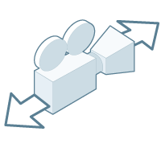

可以在“首选项”(Preferences)窗口（）的“界面”(Interface)类别中设置以下首选项。
若要恢复出厂默认设置，请在此窗口中选择。这将重置“首选项”(Preferences)窗口中每个类别的首选项。
主屏幕
- 启动时显示主屏幕(Show Home Screen on Startup)
-
这决定了在启动 Maya 时您首先看到的是否是应用程序主页。
“启动时显示主屏幕”(Show Home Screen on Startup)选项还有一个环境变量：MAYA_NO_HOME。请参见常规环境变量。
默认设置为启用。
- 在菜单栏中显示主页图标(Show Home icon in menu bar)
-
禁用“在菜单栏中显示主页图标”(Show Home icon in menu bar)可隐藏显示在菜单栏旁边的“主页”(Home)图标 。这有助于防止意外切换到应用程序主页(Application Home)屏幕。
“在菜单栏中显示主页图标”(Show Home icon in menu bar)选项还有一个环境变量：MAYA_NO_HOME_ICON。请参见常规环境变量。
默认设置为启用。注： 禁用此选项还会抑制显示有“主页”(Home)图标的崩溃恢复消息。这些消息将显示在脚本编辑器(Script Editor)中。
界面
- 菜单集(Menu set)
-
确定哪个菜单集将在启动时显示在主菜单栏中。另请参见菜单和菜单集。
- 显示菜单栏(Show menu bar)
-
隐藏或显示主菜单栏（Windows 和 Linux）。隐藏或显示“面板”菜单栏（所有平台）。
- 显示面板工具栏(Show panel toolbar)
-
设置是否为所有面板显示面板工具栏。
- 显示标题栏(Show title bar)
-
在主窗口和“脚本编辑器”(Script Editor)中隐藏或显示标题栏（Windows 和 Linux）。标题栏包括用于展开和收拢应用程序的窗口控制按钮。
- 窗口(Windows)
-
启用“记住大小和位置”(Remember Size and Position)，以便 Maya 在关闭再重新打开窗口时还原所有窗口的大小和位置。如果禁用该选项，则 Maya 窗口在打开时始终显示在屏幕中央。
- 在菜单中显示图标(Show icons in menus)
- 启用“在菜单中显示图标”(Show icons in menus)，以便在 Maya 主菜单中菜单项的旁边显示表示对应工具的图标。
- 命令行(Command Line)
-
如果希望在按 Enter 键或 Return 键后光标停留在“命令行”(Command Line)中，请启用“保持焦点”(Hold focus)。否则，光标将返回到视图窗口。
- 大纲视图(Outliner)
-
当处理包含大量面的对象集时，在大纲视图(Outliner)中展开或选择面组件将会非常耗时。如果发现“大纲视图”(Outliner)性能下降，请激活此选项以通过限制状态更改消息来提高性能。
默认情况下，该选项处于禁用状态。
- 表达式编辑器(Expression Editor)
-
选择“表达式编辑器”(Expression Editor)来编辑文本。
亮显新特性(Highlight What's New)
- 亮显此版本中的新特性(Highlight what's new in this release)
- 用方形边框包围新功能菜单和图标，以便更轻松地发现它们。默认情况下，该选项处于启用状态。
- 亮显颜色(Highlight Color)
- 确定用于亮显新功能的方括号的颜色。默认情况下，该选项为绿色。
设备
- 鼠标滚轮(Mouse Scroll Wheel)
-
允许 Maya 的滚动条随鼠标滚轮一起移动。启用此选项后，可以使用鼠标滚轮在 Maya 中滚动浏览各种列表和窗口（例如，滚动浏览较长的属性列表）。
- 鼠标跟踪(Mouse Tracking)
-
在 Macosx 上，Maya 允许您选择使用三个按钮的鼠标、两个按钮的鼠标或一个按钮的鼠标。（所有文档都假定使用三个按钮的鼠标）。
下表显示了双按钮鼠标或单按钮鼠标的单击与三按钮鼠标的单击的等效功能。
三个按钮 两个按钮 一个按钮 鼠标左键
鼠标左键
鼠标按钮
鼠标中键
Command + 鼠标左键
Command + 鼠标键
鼠标右键
鼠标右键
Ctrl + 鼠标键
Option + 鼠标右键，或 Command + 鼠标右键
Option + 鼠标右键
Ctrl + Option + 鼠标键
如果使用一个或两个按钮的鼠标进行翻滚、平移、推拉或选择缩放，则命令控制与在适用于三个按钮的鼠标的文档中介绍的控制不同。下表指出了控制更改。
功能 三个按钮 两个按钮 一个按钮 翻滚 Option + 鼠标左键
Option + 鼠标左键
Option + 鼠标键
平移
Option + 鼠标中键
Option + Command + 鼠标左键
Option + Command + 鼠标键
推位Option + 鼠标右键
Option + 鼠标右键
Option + Ctrl + 鼠标中键 选择缩放 Option + Ctrl + 鼠标左键
Option + Ctrl + 鼠标左键
不可用 注： 对于选择缩放，为选择缩放按住相应的按钮，并沿着您要推摄和拉摄的视图部分画框。如果将框从左侧拖动到右侧，则推入。
如果将框从右侧拖动到左侧，则推出。
- 多点触控手势(Multi-Touch Gestures)
- 启用和禁用多点触控手势输入。启用此选项后，可以使用直观手势在多点触控设备或触控板上操作 Maya。请参见多点触控输入手势。
- 使用触控板(Use Trackpad)
-
（仅适用于 Macosx）
使用触控板启用和禁用多点触控手势输入。
当设置为使用多点触控手势时，您可以使用触控板操作 Maya。从下列选项中选择。
- 仅光标控制(Cursor Control Only)
- （默认值。） 禁用触控板的多点触控交互。触控板将以正常方式工作，仅控制光标。
- 光标和多点触控(Cursor and Multi-touch)
- 启用触控板来控制光标（使用单指），并启用多点触控手势（使用双指或更多手指）。
- 仅多点触控手势(Multi-touch Gestures Only)
- 专门针对多点触控交互启用触控板。如果您有一个单独的不具备多点触控功能的绘图板，或一个单独的定点设备（如鼠标），则可以使用此设置。在此模式下，您仍可以使用一个手指滑动来控制光标。
- 绘图板 API(Tablet API)
-
（仅适用于 Windows）
此菜单用于为压力敏感型手写板选择绘图板 API，它可与 Maya 工具（如 Blue Pencil）配合使用。提示： 对绘图板进行故障排除时，请尝试使用不同的 API 设置；切换到其他 API 可能会获得更好的结果。从以下两个选项中进行选择：自动(Automatic) 使用绘图板 API 设置接收绘图板手写输入。使用 Windows 附带的 Windows Ink。使用基于 Microsoft Surface 手写笔的绘图板的用户的推荐选项。这是默认设置。
WinTab 使用 WinTab API 接收绘图板笔输入。
注： 更改这些设置后，重新启动 Maya 以使其生效。
界面缩放
- 使用系统设置缩放界面(Scale interface using system setting)
- Maya 自动使用操作系统分辨率设置，相应地缩放用户界面。当前设置以每英寸像素数 (PPI) 表示，位于此选项的旁边。这是界面缩放的默认值。
- 使用自定义缩放(Use custom scaling)
- 使用此选项可设置下拉列表中的特定显示分辨率。
- 不缩放(Do not scale)
- 如果希望 Maya 按最低的显示分辨率显示，而不管系统显示分辨率设置如何，则使用此选项。
- 在已启用 Retina 的设备上，Maya 自动使用最佳的显示设置，因此“使用自定义缩放”(Use custom scaling)设置不可用。
- 如果将 MacBook Pro (Retina) 与 4K 显示器一起使用，则操作系统版本必须是 10.9.3 或更高版本。
对于运行 4K 显示器的 Macosx 操作系统，“界面缩放”(Interface Scaling)部分在“界面首选项”(Interface Preferences)中不显示：
如果界面文本太小，请尝试更改显示器的“系统首选项”(System Preferences)。在 Apple 支持网站上查找文章“调整 Retina 显示屏的分辨率”。